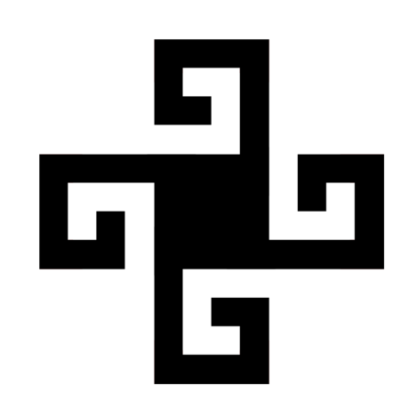

Exact copy of R.drawable.gir_final_logo.
Production asset check
This page mirrors the exact PNG assets currently referenced by the Android production code. The motion below is browser-only review behavior; the app source is not changed.
Named assets
These are copies of the Android resources used by the launcher, splash, setup, and active-work surfaces.

Exact copy of R.drawable.gir_final_logo.
Exact copy of R.drawable.gir_final_logo_white, used by the active mark.
Exact copy of R.drawable.gir_launcher_foreground.
Motion tests
The controls below are only for review. They wrap the same hosted static asset with different timing and emphasis.